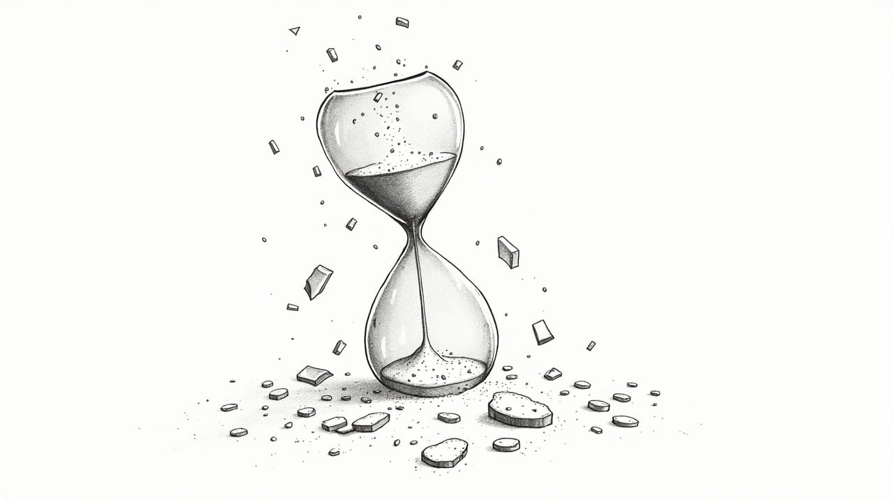
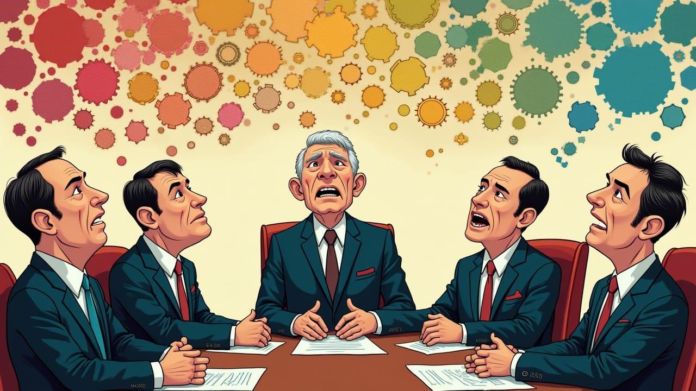
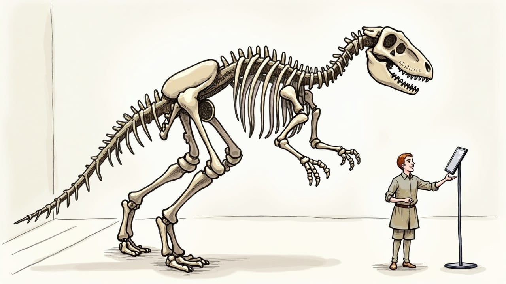

The Consulting Industry's Terminal Diagnosis
When a single government contract cancellation wipes $14B from Accenture's value, it's not just a bad day—it's a diagnosis. The consulting industry built a fortune selling Google-able insights at 300% markups. Now AI has arrived with the receipts, and the patient is terminal.


In the age of AI, wisdom is no longer for sale—it's open source.

Accenture's $14B Collapse Reveals the Death of Billable Hours
On March 21st, 2025, $14 billion in market value vanished from Accenture's balance sheet in a single trading day. The consulting industry's facade finally crumbled, and Wall Street took notice. Even as the company trumpeted better-than-expected earnings, investors fled—triggering a 7.3% plunge that revealed an inconvenient truth: the consulting industry's entire foundation is crumbling.
This wasn't a mere market correction—it was an awakening. Behind closed doors, industry veterans have long whispered what became publicly obvious that day: consulting's business model is built on sand. For decades, these firms have borrowed credibility and sold illusions, packaging standard frameworks as bespoke wisdom. Now, as artificial intelligence democratizes expertise and clients demand real metrics, we're watching more than Accenture's stumble—we're witnessing an industry's legitimacy implode.
The Adaptable Predator: How Accenture Bends Reality
Accenture operates on a predator's core principle: adapt or die. But their adaptation isn't evolution—it's camouflage. Behind the sleek corporate presentations and ethical policy documents lurks a shape-shifter that treats regulations as mere suggestions. When tax laws prove inconvenient, they relocate (Bermuda, 2001; Ireland, 2009). When clients question fees, they rebrand routine work as "digital transformation." Every obstacle becomes an opportunity for metamorphosis, not compliance.
This chameleon act has proven lucrative. As artificial intelligence threatened to automate their core services, they simply rebranded themselves as AI shamans, charging premium rates to interpret the very technology that could render them obsolete. The strategy is elegant in its simplicity: maximum extraction, minimal delivery.
Perhaps their most brilliant adaptation is linguistic: the invention of an entire consulting dialect designed to make simple concepts sound profound. The "Accenture Technology Vision" and "Digital Transformation Index" aren't methodologies—they're marketing spells cast in proprietary jargon. Each baroque phrase and trademarked framework serves two purposes: justifying astronomical fees and ensuring clients need translators for their own business problems. It's a linguistic protection racket, where clarity becomes a premium service.
When Someone Finally Checks the Receipts

Accenture's undoing didn't come from disruptive technology or fierce competition. It came from a simple question: "Show us the receipts." When the Department of Government Efficiency (DOGE) demanded federal agencies justify their consulting expenses, the house of cards began to tremble. CEO Julie Spellman Sweet tried to downplay the threat, citing that federal contracts represented "only" 8% of global revenue and 16% of Americas revenue. But markets saw through the spin—this wasn't about percentages. It was about precedent.
Markets reacted not to the immediate revenue threat, but to the dangerous question it raised: What happens when clients demand proof of value? A single terminated contract—worth $10 million since 2021—triggered a $14 billion market value collapse. Because everyone understood: this wasn't about one contract. It was about the entire house of cards built on unquestioned expenses.
The government's demand for accountability represents an existential threat precisely because meaningful metrics have been consulting's Achilles heel. Behind closed doors, industry veterans acknowledge the impossibility of quantifying their impact with any precision. "We're selling confidence as much as solutions," confided one former Accenture partner who requested anonymity. "The moment clients demand empirical proof of our value contribution, the game changes entirely." This admission reveals the industry's greatest fear: objective evaluation of their contributions against their costs.
The Knowledge Arbitrage Scheme
Beneath consulting's glossy veneer and fancy jargon lies a simple truth: it's a high-stakes game of knowledge arbitrage. The playbook is ruthlessly efficient: hire ambitious graduates fresh from elite universities, work them to exhaustion at modest salaries, then sell their output to Fortune 500 clients at eye-watering markups. The entire model hinges on a carefully cultivated myth: that this expertise is rare, exclusive, and worth the premium. But artificial intelligence has shattered this illusion, exposing the game for what it is. When an algorithm can match in milliseconds the insights that bleary-eyed junior consultants piece together over weeks, consulting's imperial costume reveals itself as nothing but expensive air.
At the heart of this scheme sits the sacred billable hour—consulting's own cryptocurrency, minted from human exhaustion. Industry veterans privately admit the perversity: "Junior consultants shoulder the work while partners collect the profits. A first-year analyst could spend 100 hours crafting the perfect analysis, but the system only sees the partner's two hours of PowerPoint review." The result? A business model that rewards presence over performance, hours over outcomes.
Make no mistake: this is a pyramid scheme in Patagonia vests. Fresh graduates sacrifice their twenties to the god of billable hours, chasing the partner-level paradise that fewer than 5% will reach. Clients shell out $500 per hour believing they're buying seasoned wisdom, while sleep-deprived 23-year-olds frantically Google industry basics between midnight coffee runs. The true scandal isn't just the markup—it's that Fortune 500 companies are betting their futures on analysis from consultants who can't rent a car without paying the young driver surcharge.
Selling Their Own Destruction
Picture a weapons manufacturer teaching its customers how to build their own arsenal. That's Accenture's current AI strategy. While trumpeting $1.1 billion in GenAI revenue, they're actively selling the tools that will render their traditional business obsolete. Each successful AI implementation is another nail in consulting's coffin—a fact their own quarterly earnings calls seem desperate to ignore.
The contradiction is delicious: every dollar of AI revenue hastens their traditional business's demise. It's as if Blockbuster had proudly launched a streaming service while maintaining thousands of retail locations. Each successful AI project rips away consulting's facade, revealing an uncomfortable truth: their "complex" analyses can be automated in seconds, their "proprietary" frameworks are glorified templates, and their expensive suits cover an increasingly hollow core.

Read Accenture's own AI marketing materials, and the cognitive dissonance becomes staggering. Their white papers breathlessly proclaim how AI will "democratize expertise" and "transform knowledge work"—apparently oblivious that they're advertising their own obsolescence. Their 2023 Technology Vision report reads like a suicide note dressed in corporate optimism: "AI will revolutionize how organizations access and apply knowledge." Translation: "AI will eliminate the need for expensive consultants." Either they don't see the connection, or they're running one final con while racing for the exits.
The Illusion of Expertise in a Connected World
In 2004, consulting firms guarded their "proprietary insights" like medieval monks hoarding manuscripts. Today, those same insights are available through a Google search or a ChatGPT prompt. The mystique of the McKinsey deck or the Accenture framework dissolves when identical strategies appear in countless LinkedIn posts and Medium articles. Premium pricing requires scarcity—and knowledge is no longer scarce.
But AI isn't just democratizing knowledge—it's weaponizing it. Factory floor workers now optimize their workflows through AI assistants. Customer service teams redesign processes through automated analysis. Scientists revolutionize research methods via machine learning. The consulting firm's holy grail—privileged access to "best practices"—has been mass-produced. When a $20 monthly AI subscription offers more insights than a $2 million consulting engagement, the consulting mystique isn't just exposed—it's extinct.
Nowhere is this expertise facade more glaring than in specialized industries. Picture a 26-year-old Accenture consultant—three years removed from their art history degree—explaining pharmaceutical R&D optimization to scientists with decades of experience. Or a former English major advising semiconductor manufacturers about chip fabrication. The truth, as one pharmaceutical CEO privately admitted: "We pay millions for consultants to tell us what our own people have been saying for free. But it looks prettier in PowerPoint." Now that AI can transform internal expertise into consultant-grade presentations, even this last refuge of value evaporates.
Writing New Rules When Old Ones Don't Serve You
Accenture's response to market pressures reveals their true corporate philosophy: rules are for the weak. Their latest workforce policy reads like a dystopian novel: "No project? No job." The same firm that charges millions to design "human-centered" transformations for clients now terminates employees without projects through midnight emails. Hypocrisy, it seems, bills at partner rates.
Watch Accenture's corporate evolution, and a pattern emerges: when rules become inconvenient, they simply change games. Commoditized consulting becomes "digital transformation." Tax problems vanish through Irish incorporation. Demands for deliverables transform into endless "transformation journeys." They've mastered every adaptation except the one that matters: creating genuine value.
The peak of this duplicity? Accenture's change management practice—where they sell "employee-centric transformation" frameworks while practicing corporate Darwinism internally. They charge clients millions for "inclusive transition strategies" while their own workforce learns about reorganizations through mass Zoom calls. It's like hiring a bankrupt day trader as your financial advisor—the advice might be sound, but the messenger destroys the message.
The Terminal Diagnosis

If sunlight is the best disinfectant, consulting firms are corporate vampires. Their business model requires darkness—a carefully maintained opacity that shields their work from meaningful measurement. As one industry analyst noted with surprising candor: "The consulting industry's profitability depends entirely on the impossibility of measuring its actual value." In an age of data-driven decision making, they remain proudly, profitably unmeasurable.
Now, this darkness faces three spotlights: government auditors demanding receipts, AI algorithms exposing the simplicity behind their complexity, and clients finally asking for proof of value. The ultimate irony? Consulting firms embody every flaw they're paid to fix: inefficiency, inflexibility, and resistance to change. They've become the corporate equivalent of a fitness guru who can't touch their toes.
Consider the cognitive dissonance: firms that preach data-driven decision-making while refusing to subject their own work to empirical scrutiny. They'll mandate metrics for every client process except their own fees. They'll demand ROI calculations for every corporate investment except their own invoices. A former McKinsey partner let slip consulting's darkest fear: "The entire industry collapses the moment clients start demanding evidence for our recommendations." They're the financial equivalent of psychics—the magic disappears under scientific scrutiny.
Not A Correction—An Extinction Event
Wall Street didn't overreact by erasing $14 billion of Accenture's value—it finally caught up to reality. The math is brutally simple: when knowledge becomes abundant, algorithmic, and instantly accessible, no one pays premium prices for PowerPoint presentations of Google-able insights. This isn't a market correction; it's the first tremor of an extinction-level event.
Traditional consulting isn't being disrupted—it's being deleted. Accenture's stock plunge is Wall Street finally calculating the true value of repackaged common sense. For once, the industry that made its fortune rewriting rules for others is watching helplessly as technology and transparency rewrite its own.
The final irony cuts deep: after decades of charging premium rates to tell others how to adapt or die, consulting firms face their own extinction with the grace of dinosaurs watching the approaching asteroid. They've become the punchline to their own disruption presentations—legacy incumbents too invested in their own mythology to recognize the meteor headed their way.
Watch as this extinction cascades through consulting's evolutionary tree. McKinsey and BCG, the velociraptor elite of strategy consulting, will retreat into ever-smaller niches, charging more for less until their client pool evaporates. Accenture and its implementation-focused kin will transform into hollow shells—AI platforms with human facades, desperately maintaining the illusion of expert oversight. The Big Four, those audit-powered survivors, will mutate into software companies with accounting licenses. But the era of consultant armies charging four-figure day rates to reformat public information? That species is already extinct—the market just hasn't finished burying the bones.
Turns out there's one rule even Accenture can't rewrite: the law of value. When clients can measure your actual contribution, no amount of PowerPoint sorcery can justify partner rates. That $14 billion market value extinction isn't just about Accenture—it's the market finally pricing in consulting's irrelevance. The billable hour is joining the fax machine in business archaeology.
When they chisel consulting's epitaph, it will read: "Here lies an industry that sold expensive mirrors to companies trying to see their own reflection." As businesses integrate AI analytics and access global expertise at subscription prices, consulting's smoke-and-mirrors show is reaching its final act. Accenture's lasting contribution to business history? Proving that you can build a multi-billion-dollar empire selling organizations their own insights at a 300% markup—at least until technology makes self-reflection free.
Courtesy of your friendly neighborhood,
🌶️ Khayyam

Don't miss the weekly roundup of articles and videos from the week in the form of these Pearls of Wisdom. Click to listen in and learn about tomorrow, today.


Sign up now to read the post and get access to the full library of posts for subscribers only.
 🌶️ iamkhayyam
🌶️ iamkhayyamThis obituary for the consulting industry is based on public data, insider insights, and the mathematical certainty that selling Google-able knowledge at premium prices isn't a sustainable business model.